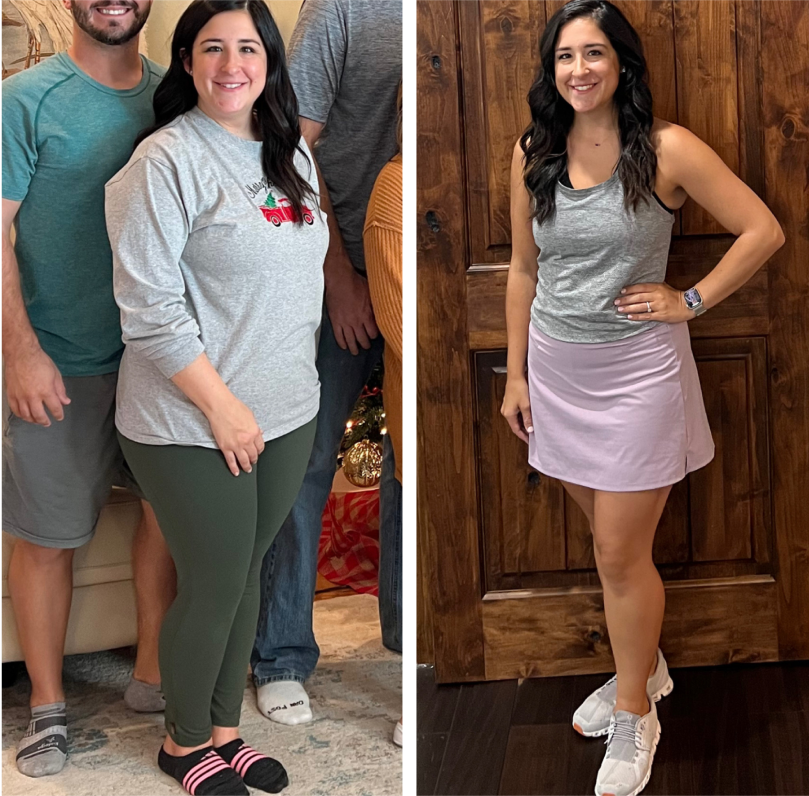

What’s your gender?

44 lbs
down!
 Had it not been for Macrofit, I don't think I would have ever made the change alone.
Had it not been for Macrofit, I don't think I would have ever made the change alone.
down!
Had it not been for Macrofit, I don't think I would have ever made the change alone.